이전 편을 보지 않고 오신 분들께 1편을 추천 드립니다.
2023.01.11 - [딥러닝/기초 공부] - [확률/통계] 2. 베이지안 결정 이론 1 + ppt, 연습문제 (패턴인식 - 오일석)
[확률/통계] 2. 베이시언 결정 이론 1 + ppt, 연습문제 (패턴인식 - 오일석)Intro 사람은 무언가를 인식할 때 가능성을 따집니다. 판단이 확실하지 않으면 가장 그럴듯한 쪽으로 인식합니다. 따라서 패턴 인식 시스템도 이 법칙을 따르지 않을 수 없습니다. 하지만 기계와 imkmsh.tistory.com
2.2 베이지안 분류기
2.1절에서는 확률과 통계의 기초에 대해 공부했습니다. 이제는 이들을 이용해 분류기를 설계해 봅시다.
훈련 집합
2.2.1 최소 오류 베이지안 분류기
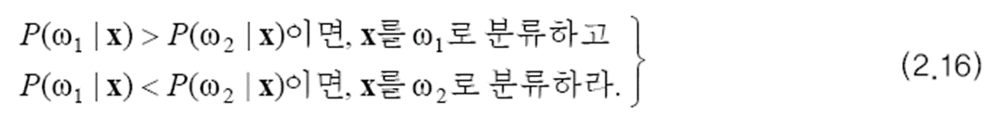
즉, x를 발생시켰을 가능성이 가장 큰 부류를 찾는 문제입니다.
이 분류기는 이진 분류 문제를 히결합니다. 두 값이 같은 경우는 기각 처리 등의 적절한 방법으로 두 부류 중 하나를 선택합니다. 기각에 대해서는 2.6절에서 설명하겠습니다.
하지만 현실적으로, 사후 확률은 직접 구할 수 없습니다. 왜냐하면 x가 만드는 특징 공간이 무수히 많은 점을 가지므로 이 모든 점을 확률로 표현할 수 없기 때문입니다. 대신 베이즈 정리를 이용해 사후 확률을 다른 것으로 대치하여 계산할 수 있습니다.
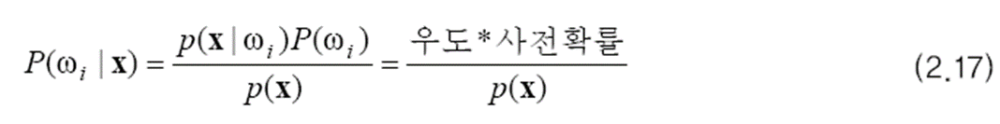
이때 분모에 있는 p(x)는 무시할 수 있습니다. w1과 w2의 사후 확률이 공통으로 가지기 때문입니다.
그렇다면 우도와 사전 확률은 어떻게 구할까요?
우도 계산
(2.16)의 분류 규칙을 다시 쓰면 (2.18)이 됩니다.
아래의 결정 규칙을 사용하는 분류기를 최소 오류 베이지안 분류기라고 부릅니다.
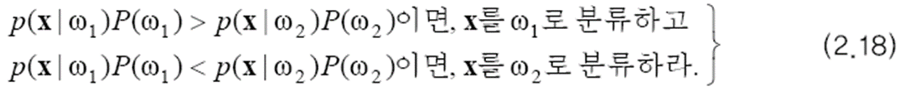
베이지안 분류기는 어느 정도 오류를 범할까요? 베이지안 분류기의 오류 확률은 정확하게 예측할 수 있습니다.
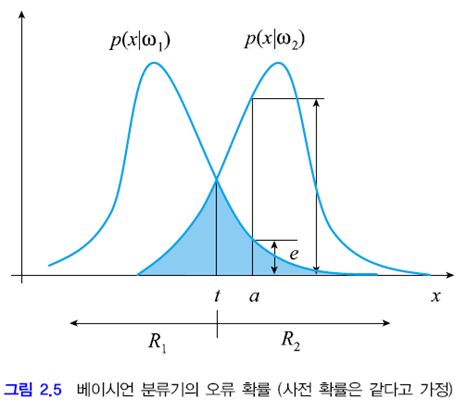
문제를 쉽게 하기 위해 두 부류의 사전 확률이 같다고 가정하겠습니다. 위 그림은 사전 확률이 같다는 가정 하에 부류 조건부 확률, 즉 우도를 보여줍니다. 이 그림에서 두 확률 분포 함수의 값이 같아지는 점을 t라고 했습니다. (2.18)의 결정 규칙에 따르면 x>t일 때 w2로 분류하고 x<t이면 w1으로 분류합니다. 즉 R1 영역의 샘플은 w1로 분류하고, R2 영역의 샘플은 w2로 분류합니다.
이제 x=a인 점에 주목해 봅시다. 이 점은 p(x|w1)<p(x|w2)이므로 w2로 분류합니다. 하지만 w1에 속할 확률이 e 만큼 발생합니다. w1의 사전 확률이 1/2이므로 실제 오류 확률은 e/2입니다. 이를 x 전체 구간으로 확대하면 베이지안 분류기의 오류 확률은 위 그림의 파란색 영역이 갖는 면적의 1/2입니다. 이를 식으로 정리하면 아래와 같습니다.
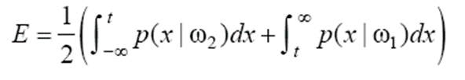
(2.18)은 우도와 사전 확률을 모두 고려한 완벽한 알고리즘입니다. 수학적으로 표현하면 '오류율 기준으로 최적'이라고 말할 수 있습니다. 다시 말하면 베이지안 분류기보다 더 좋은 분류기는 만들 수 없다는 뜻입니다. 정말 그럴까요?
임계값 t를 왼쪽 또는 오른쪽으로 옮기면 아래와 같이 파란색 영역이 커지면서 E가 증가합니다. 위 분류기가 최적의 분류기라고 할 수 있겠죠.
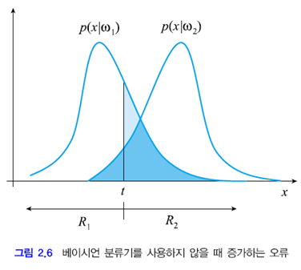
하지만 베이지안 분류기의 최적성은 우도와 사전 확률을 정확하게 알고 있다는 가정 하에 주장할 수 있습니다. 현실에서는 이 조건을 만족하는 경우가 거의 없습니다. 따라서 베이지안 분류기는 이론적인 최적성을 제시하는 것으로 보아야 합니다. 2.5절에서는 베이지안 분류기를 신경망이나 SVM과 같은 다른 분류 알고리즘과 정성적으로 비교합니다.
2.2.2 최소 위험 베이지안 분류기
최소 오류가 최소 위험으로 바뀌었습니다.
오류 확률이라는 기준이 적절하지 않은 상황도 있습니다. 암 환자와 정상인을 구별하는 경우를 생각해 봅시다. 정상인을 암 환자로 오분류하면 쓸데 없는 정밀 검사라는 적은 손실이 발생하지만, 암 환자를 정상인으로 분류한다면 죽음에까지 이를 수 있는 큰 손실이 발생합니다. 이를 손실 c로 표기합니다. cij는 wi를 wj로 분류했을 때 발생하는 손실입니다. 아래는 손실 행렬입니다.
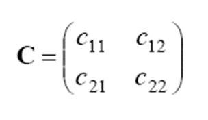
최소 위험 베이지안 분류기
그림 2.5를 생각해 봅시다. 영역 R1에 속하는 x가 있습니다. x가 발생할 확률은 p(x|w1)이고 이때의 손실은 c11입니다. 따라서 x에 대한 손실의 기대치는 c11p(x|w1)로 쓸 수 있습니다.
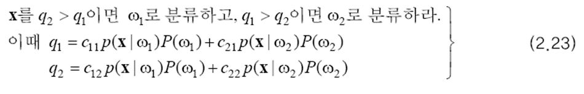
그렇다면 문제는 평균 손실을 최소화하기 위해 특징 공간을 어떻게 나눌 것인가 입니다. x를 R1에 소속시키면 q1만큼의 손실이 발생하고 R2에 소속시키면 q2만큼의 손실이 발생합니다. 따라서 평균 손실을 최소화하는 결정 규칙은 위와 같습니다. 이 결정 규칙을 사용하는 분류기를 최소 위험 베이지안 분류기라고 합니다.
(2.23)을 보면 x와 무관해서 미리 계산이 가능한 항들이 있습니다. q2>q1이라는 부등식에 대해 x와 무관한 항들만 우변으로 모으면 아래와 같은 식이 됩니다. 좌변은 두 우도의 비율이므로 우도비라고 합니다. 과정에서 cij>cii(틀린 분류가 옳은 분류에 비해 더 적은 손실을 가져온다는 상식적 가정), i≠j라는 가정을 합니다.
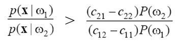
이제 최소 위험 베이지안 분류기를 아래와 같이 다시 쓸 수 있습니다. 이 규칙은 우도비를 임계값과 비교하여 의사 결정을 하므로 우도비 결정 규칙이라고 부릅니다. 임계값 T는 미리 계산해 둘 수 있습니다.
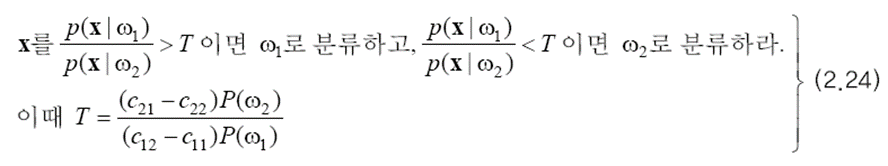
즉 정상이라는 확신이 크지 않으면 암 환자로 분류하라는 것입니다. 이러한 규칙은 사람의 직관적인 의사 결정 방식과 일치합니다. 최소 위험 분류기는 c12=c21이면 최소 오류 분류기와 같게 됩니다.
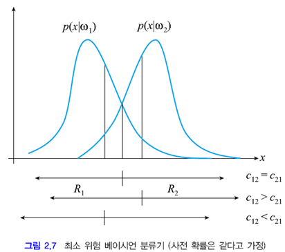
2.2.3 M 부류로 확장
앞 절에서는 설명의 편의를 위해 부류가 두 개라고 가정하고 분류기를 만들었습니다. 이를 M 부류로 확장하는 것은 그리 어렵지 않습니다.
M 부류 최소 오류 베이지안 분류기
(2.16)을 아래와 같이 확장할 수 있습니다. M 개의 사후 확률을 구하고 그 중 가장 큰 사후 확률을 갖는 부류로 분류하라는 것입니다.
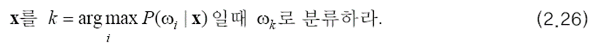
마찬가지로 아래와 같이 다시 쓸 수 있습니다. (2.27)은 M 부류 최소 오류 베이지안 분류기입니다.
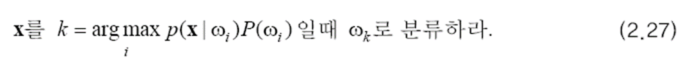
이제 최소 위험을 고려해 봅시다. (2.22)를 확장하면 아래와 같습니다. 이 결정 규칙을 사용하는 분류기는 M 부류 최소 위험 베이지안 분류기입니다.
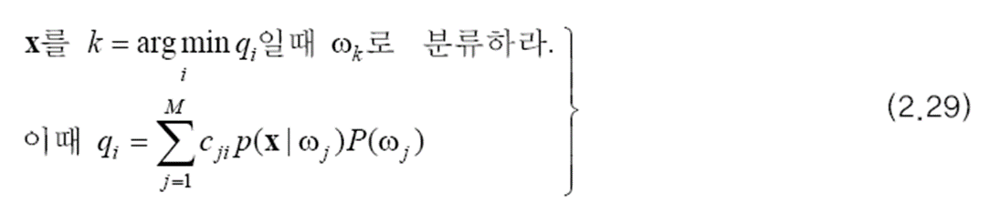
이상으로 2.2절이 마무리 되었습니다. 이후 내용 및 연습문제와 ppt는 다음 글로 작성하겠습니다.
출처:
패턴인식 - 오일석